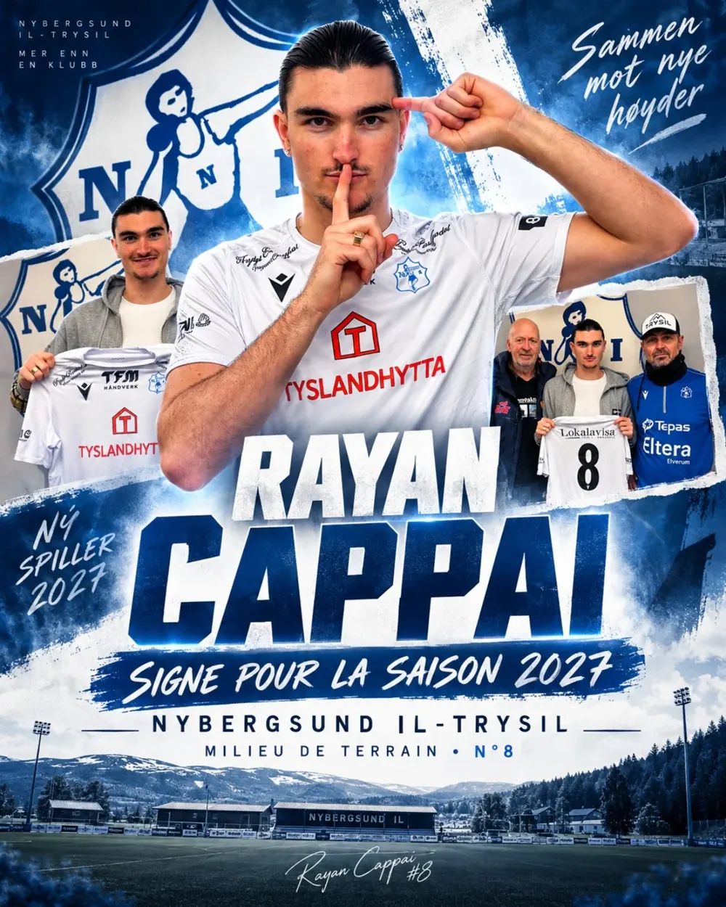
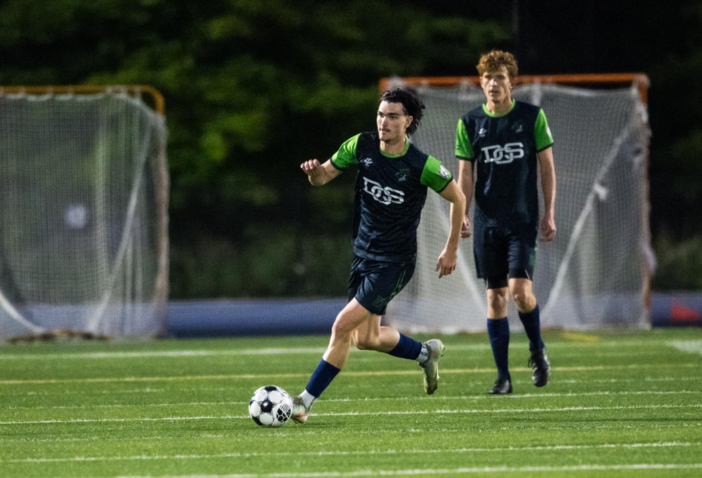
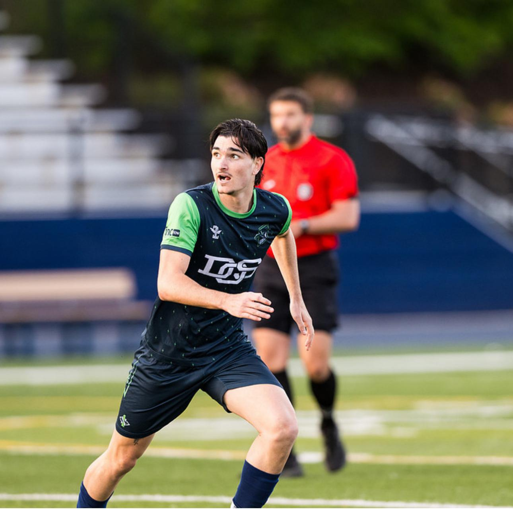
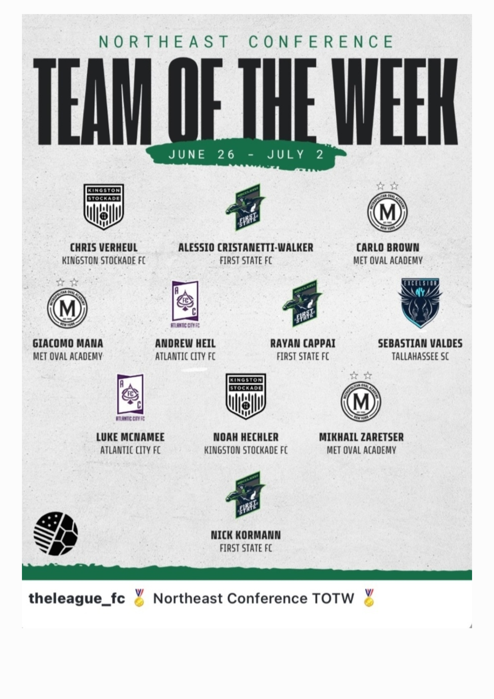
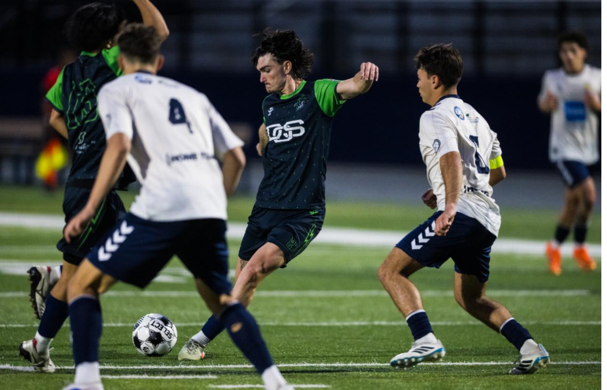
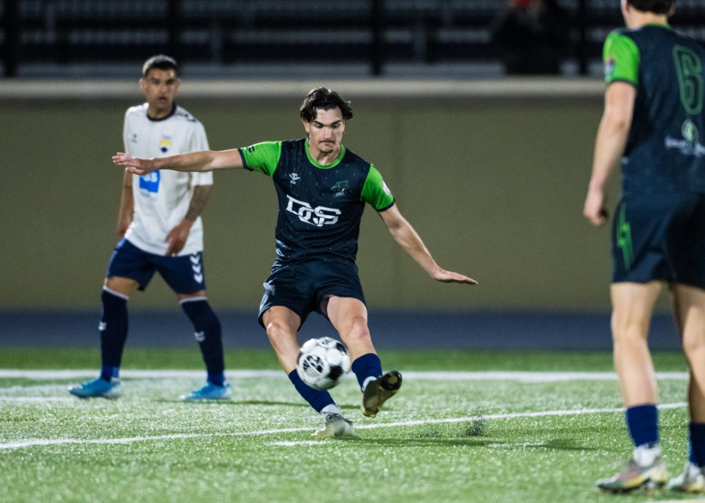

French youth level
AC Ajaccio · U17 National / Gazélec Ajaccio · U19 NationalNybergsund IL Trysil · Signed for the 2027 season
Player profile
Rayan
Cappai
French Defensive Midfielder · 6
Ball-winning · Playmaking
French youth development at AC Ajaccio and Gazélec Ajaccio, followed by experience in the United States and Norway. At Nybergsund IL Trysil since July 2026, signed for the 2027 season.
- Position
- 6
- Preferred foot
- Right
- Height
- 1.82 m
- Weight
- 77 kg
Current clubNybergsund IL Trysil · 2027
Verified recognitionConference Team of the Week

Recruiter snapshot
Player profile
Verified information for a fast first review. Detailed context and full-match evidence follow below.
U.S. college experience
William Penn UniversityCurrent club
Nybergsund IL Trysil · Norway2026 competition
4. divisjon menn · 2026Recognition
Northeast Conference TOTWContract status
Signed with Nybergsund IL Trysil for the 2027 seasonNorway · 2026 season
Nybergsund · 2026 season
As of 11 October 2026 · Joined 20 July 2026
League appearances
11 / 11 since joiningLeague goals
3 goalsClub league position
3rd · 41 pointsSecond-half points ranking
1st · 25 pointsSecond half: matchweeks 14–23, 8 wins, 1 draw and 1 defeat in 10 matches. Nybergsund: 25 points in 10 matches; HamKam 2: 22 points in 9. Ranking calculated from NFF results as of 11 October 2026; games played differ.
Coach video review
Video selection and full match
A selection of actions provides a concise overview of his player profile. The full match supports a broader assessment of his positioning, decision-making, execution speed, and activity with and without the ball.

First screeningHighlights · 2026
Rayan Cappai · Highlights 2026
A concise overview of technical actions, movement and midfield involvement.
Watch highlights
#27Full match · June 20, 2026
FC Monmouth vs First State FC
Rayan wears number 27. Use this match for an unedited evaluation of his role and decisions.
Watch full match01Scanning & positioning
02Tempo & decision-making
03Defensive work rate
04Ball-winning & playmaking · 6
Football background
A clear pathway across France, the U.S. and Norway.
-
France · U16 / U17 years
AC Ajaccio · U17 National
Two seasons in U17 National during his U16 and U17 years.
-
France · U18 / U19 years
Gazélec Ajaccio · U19 National
Two seasons in U19 National during his U18 and U19 years.
-
United States · College experience
William Penn University
Experience in a U.S. university football environment.
-
Summer 2026 · United States
First State FC
The League for Clubs, Northeast Conference. Recent match footage available.
-
Since 20 July 2026 · Norway
Nybergsund IL Trysil
4. divisjon menn, NFF Indre Østland. 11 league appearances and 3 goals as of 11 October 2026. Signed with the club for the 2027 season.
View official NFF player profile

Verified recognition
The League for Clubs · Northeast Conference Team of the Week
Selected for the June 26 – July 2, 2026 Team of the Week with First State FC.
View the source publicationCompetition photography
In match action
A selection of competitive images with First State FC during Summer 2026, before his move to Nybergsund IL Trysil.


Sport CV
One-page CV. Three languages.
The Sport CV matches the information on this profile and includes direct links to both videos.
- Current status and recent experience
- Player profile and current role
- Highlights, full match and direct contact
Updated 1 November 2026
Direct contact
Interested in evaluating Rayan?
Rayan has signed with Nybergsund IL Trysil for the 2027 season. For staff enquiries or supporting documents, contact him directly.